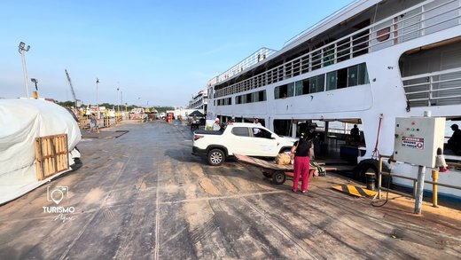

00:01:10.967
Caminhonete branca entra pela abertura lateral do navio Bruno, enquanto pessoas e um carrinho de carga ficam no cais.
Porto do Grego, Santana (AP) · confirmado
A viagem com destino a Santarém começa com o embarque do carro no navio, no porto que atende passageiros e cargas em Santana.
Transcrição · 00:01:00 | 00:01:07 | 00:01:15 | 00:03:34
Turismo Aqui — quadro de vídeo publicado no YouTube
Referência 1 · Referência 2